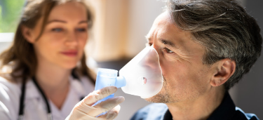

Centro médico Galenos otorga una atención de calidad a todos los pacientes. O eso dicen

Tratamiento multidisciplinario es fundamental para recuperación del paciente.
Comunicamos que todo médico que desee reincorporarse a esta institución lo podrá hacer, tal como ya ha sucedido ...
Un enfoque integral desde la perspectiva médica.